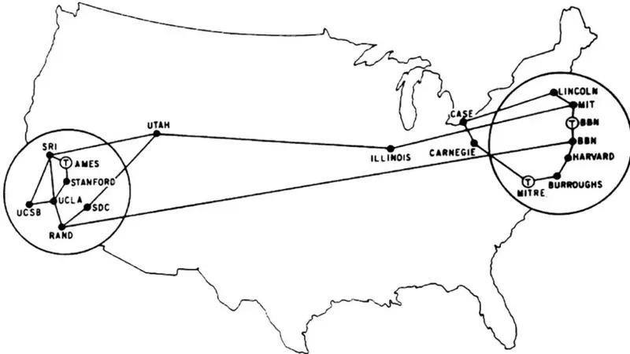
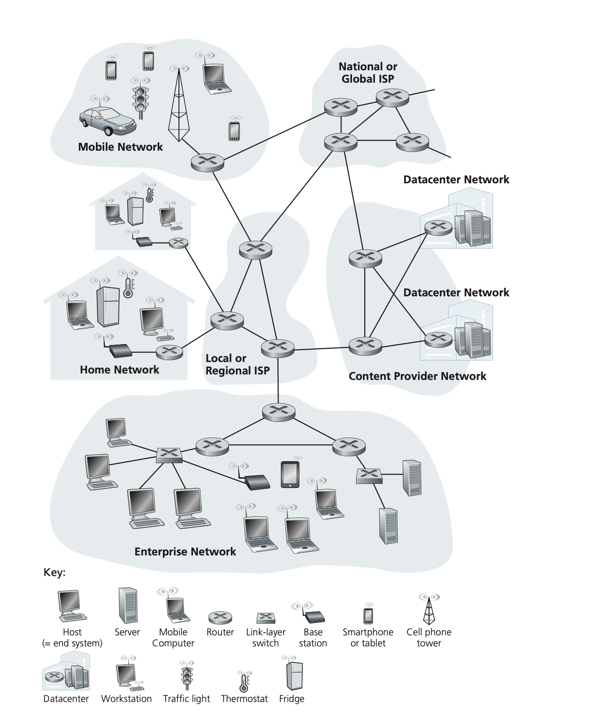

graph TD
PAN["📱 PAN (Personal Area Network)<br>Smartphone ↔ Smartwatch"]
LAN["🏠 LAN (Local Area Network)<br>Home/Office/Building Network"]
WLAN["📡 WLAN (Wireless LAN)<br>Wi-Fi Implementation of LAN"]
CAN["🏫 CAN (Campus Area Network)<br>Multiple LANs in Campus"]
MAN_ISP["🏙️ MAN (Metropolitan Area Network)<br>ISP Network"]
MAN_MOBILE["📶 MAN (Metropolitan Area Network)<br>5G/4G Mobile Network"]
WAN["🌍 WAN (Wide Area Network)<br>Between Cities or Countries"]
INTERNET["🌐 Internet<br>Global Interconnected WANs"]
VPN["🔐 VPN (Virtual Private Network)<br>Secure Tunnel over Internet"]
%% Traditional wired path
PAN --> LAN
WLAN -.-> LAN
LAN -->|Multiple LANs| CAN
CAN --> MAN_ISP
LAN -->|Multiple LANs| MAN_ISP
%% Mobile path
PAN --> MAN_MOBILE
%% Both MANs connect to WAN
MAN_ISP -->|Multiple MANs| WAN
MAN_MOBILE -->|Multiple MANs| WAN
WAN -->|Multiple WANs| INTERNET
VPN --> INTERNET
style WLAN fill:#e1f5fe
style VPN fill:#f3e5f5
style MAN_MOBILE fill:#fff3e0
1 Introducción a las Redes de Ordenadores
1.1 Introducción
La etimología de Internet es “Interconnected Networks” (Redes interconectadas), lo cual nos da una pista sobre qué es: una red global interconectada de redes más pequeñas que permite la comunicación entre los diferentes dispositivos conectados. Internet opera como un sistema descentralizado compuesto por varias capas de redes, desde las LAN (Local Area Networks), que son los nodos donde nos conectamos, hasta las WAN (Wide Area Networks) que abarcan continentes.
En la Figura 1.1 podemos ver una organización jerárquica de Internet, donde múltiples redes del mismo nivel se agregan para formar el siguiente nivel superior. A medida que ascendemos en la jerarquía, el número de dispositivos que se pueden conectar se incrementa exponencialmente. Las PAN son redes que conectan dispositivos personales como smartphones y sirven para conectar con smartwatches y electrodomésticos, entre otros. Desde las PAN podemos tomar dos rutas principales hasta el Internet, a través de las LAN o directamente con las MAN (5g o 4g). Las LAN son redes que cubren hogares, oficinas u otras unidades donde el número de dispositivos es reducido. La conexión a las LAN puede ser cableada o inalámbrica, por ejemplo con WLAN (Wi-Fi). Una CAN es una agrupación de redes LAN, generalmente en campus universitarios o grandes empresas donde el número de dispositivos es elevado. Las redes CAN, LANs individuales y las redes de telefonía móvil (e.g, 4G/5G) se juntan para dar lugar a las MAN. Las MAN generalmente abarcan ciudades o grupos de ciudades, que interconectadas dan lugar a las WANs. Finalmente, múltiples WANs dan lugar al Internet global. Las VPN (Virtual Private Network) operan como túneles seguros sobre toda esta infraestructura, permitiendo que los dispositivos cambien dinámicamente entre rutas según la tecnología disponible en cada momento.
Para ilustrar el funcionamiento de Internet vamos a utilizar un ejemplo simplificado. Supongamos que María quiere enviar un mensaje desde un Smartphone conectado a Internet a través del WiFi de su casa en Madrid a Takeshi, conectado a una LAN en la universidad de Tokio (dentro de una CAN). Puede que algunos términos no os suenen, no os preocupéis, los iremos viendo a lo largo de la asignatura. El proceso de envío sería el siguiente:
1. Origen - LAN Madrid: El smartphone de María crea el paquete (podéis pensar en el como un mensaje) con la dirección IP de destino de Tokio y la dirección MAC del router WiFi como destino inmediato. El router WiFi recibe el frame Ethernet, examina la dirección IP de destino y se da cuenta de que no pertenece a su red local. Reemplaza la dirección MAC de destino por la de su gateway (ISP) y reenvía el paquete.
2. Router local a MAN: El router del ISP local recibe el frame con su propia dirección MAC como destino. Extrae el paquete IP, examina la dirección IP de destino y determina que debe enviarlo hacia la MAN de Madrid. Encapsula el paquete en un nuevo frame con la dirección MAC del siguiente router como destino.
3. MAN a WAN nacional: El router de la MAN de Madrid recibe el frame dirigido a su dirección MAC, extrae el paquete IP y analiza el destino. Al comprender que Tokio está fuera de España, encapsula el paquete en un nuevo frame con la dirección MAC del router de la WAN española como destino.
4. WAN a Internet global: El router de la WAN española recibe el frame con su dirección MAC, consulta sus tablas de rutas internacionales para Japón y encapsula el paquete con la dirección MAC del siguiente router en la ruta internacional. En cada salto a través del backbone de Internet, los routers intercambian las direcciones MAC (origen y destino) mientras preservan las direcciones IP originales.
5. Llegada a Japón - WAN a MAN: Un router de la WAN japonesa recibe el frame dirigido a su dirección MAC, reconoce que el destino IP está dentro de Japón y encapsula el paquete con la dirección MAC del router de la MAN de Tokio como nuevo destino.
6. MAN a CAN: El router de la MAN de Tokio recibe el frame con su dirección MAC como destino, examina la IP y determina que pertenece a la universidad de Tokio. Encapsula el paquete en un nuevo frame dirigido a la dirección MAC del router gateway de la CAN universitaria.
7. CAN a LAN destino: El router de la CAN universitaria recibe el frame dirigido a su dirección MAC, analiza la IP de destino para identificar qué LAN específica del campus corresponde, y encapsula el paquete con la dirección MAC del router de esa LAN como destino.
8. Destino final - LAN universitaria: El router de la LAN recibe el frame con su dirección MAC como destino, extrae el paquete IP y lo entrega al switch. El switch examina sus tablas ARP para encontrar la dirección MAC correspondiente a la IP de Takeshi, y finalmente envía el frame con la dirección MAC real de Takeshi como destino, completando el viaje desde Madrid.
En este ejemplo simplificado de envío de un mensaje por Internet ya estamos dispuestos para comprender algunos de sus componentes y identificadores. Si os fijáis, hay dos componentes que están presentes a lo largo del ejemplo, los switches y routers. El router es un dispositivo que conecta diferentes redes entre sí usando direcciones IP. Es como un “director de tráfico” que conoce las rutas entre redes distantes. Su funcionamiento a grandes rasgos es el siguiente: Llega un paquete, se identifica a través de la IP destino el camino de salida obteniendo la MAC del siguiente salto (hop), y se envía el paquete. Este proceso, denominado enrutamiento 1, se repite hasta llegar a la red destino, por eso estos algoritmos, y por ello se determinan hop by hop. El switch por otra parte es un dispositivo que conecta equipos dentro de una misma red local usando direcciones MAC. Funciona como un “repartidor inteligente” que conoce exactamente dónde está cada dispositivo en su red. Completando la analogía, Los switches manejan el tráfico local, mientras que cuando necesitan enviar datos fuera de su red, los entregan a los routers. Los routers, a su vez, se conectan a otros routers o switches según el destino.
El procedimiento de envío se realiza con dos identificadores que hemos mencionado durante el ejemplo, la MAC y la dirección IP. La dirección IP funciona como la dirección postal de una casa y permite localizar el dispositivo en las redes (como 192.168.1.100), y la dirección MAC, que es como el DNI del dispositivo: único, asignado por el fabricante y que no cambia nunca. Los routers usan direcciones IP para decidir hacia dónde enviar los paquetes, mientras que los switches usan direcciones MAC para entregar los datos al dispositivo correcto dentro de la red local. Por último, tenemos ARP, un protocolo que nos permite relacionarlas. El protocolo ARP es como un servicio de directorio telefónico: cuando un dispositivo conoce la “dirección postal” (IP) pero necesita el “DNI” (MAC) para hacer la entrega final, envía una consulta ARP preguntando “¿quién vive en esta dirección?”. El dispositivo correspondiente responde con su MAC, permitiendo que la comunicación se complete. ARP traduce entre el mundo de las direcciones (IP) y el mundo de las identidades físicas (MAC).
Una vez vistos los componentes principales de Internet, vamos a realizar unas observaciones. Primero, Internet es un sistema distribuido. Esto quiere decir que es una unión de dispositivos que operan juntos con el fin de ofrecer una funcionalidad. Segundo, Internet tiene una arquitectura descentralizada2. Por lo tanto, la caída de alguna parte de Internet no tiene porque implicar la caída de Internet globalmente. Tercero, la ejecución de los procesos de enrutamiento es local. Cada nodo de la red sólo necesita saber cual va a ser el siguiente destino (“hop”). Es decir, no hay una planificación global para el envío de los paquetes. Debido a esto los algoritmos de enrutamiento normalmente se denominan “hop by hop” e incorporan información de tiempo real 3, por lo que dos mensajes enviados al mismo destino no tienen por que seguir la misma ruta. Todo esto facilita la escalabilidad del sistema, disminuye la congestión de la red y además proporciona resiliencia a fallos.
Hasta ahora hemos visto un ejemplo simplificado de envío de mensaje, los principales componentes de internet y algunos conceptos técnicos. Pero aún falta algo. Hemos dicho que Internet es un sistema distribuido formado por redes interconectadas. Pero, ¿Cómo se entienden entre sí?. La respuesta son los protocolos. Un protocolo es una serie de pasos bien definidas que se realizan con un objetivo. En redes de computadores, es como un manual de instrucciones que especifica cómo dos dispositivos deben intercambiar información. Es un conjunto de reglas que define exactamente cómo deben estructurarse los mensajes, en qué orden enviarlos, que estructura y formato tienen los mensajes que recibimos, y cómo se debe actuar. Internet funciona gracias a una familia de protocolos organizados en capas, que veremos en el (intro-network-stacks?).
Por ejemplificarlo los protocolos de red con una analogía, son como las reglas de tráfico en una ciudad: así como los autos necesitan semáforos, señales y carriles para circular ordenadamente sin chocar, los datos en una red necesitan protocolos que definan cómo moverse, comunicarse y llegar a su destino correctamente. Sin estas reglas, tanto el tráfico vehicular como el flujo de datos serían un caos total, con “accidentes” y pérdida de información constante. Desde un punto de vista más formal, podríamos definir un protocolo como:
TipProtocolo
Un protocolo define una serie de tipos de mensaje, su sintáxis y su semántica, así como las reglas de cuándo y cómo enviar/responder los mensajes.
En los siguientes apartados vamos a profundizar en los conceptos introducidos hasta ahora, obteniendo un mejor entendimiento de cómo funciona Internet, cuales son los principales actores involucrados, y cómo podemos realizar nuestras propias aplicaciones que funcionen sobre la red. Los puntos se abordarán de la siguiente manera. Primero, se verán desde un enfoque “informático”, y después contextualizaremos como encaja cada uno de los puntos desde el punto de vista de desarrollo de videojuegos.
1.2 La Historia de Internet
Internet, como otros muchos avances de la sociedad, nació como una necesidad de guerra. En concreto, en la Guerra Fría. En una guerra la información y poder comunicarla es poder. El objetivo inicial del germen de Internet, llamado ARPANET, era precisamente la comunicación de información y que estos medios fuesen capaces de sobrevivir a un ataque nuclear. En 1969 la red experimental contaba con 4 host: UCLA, Stanford, UC Santa Bárbara y la Universidad de Utah. Esta red utilizaba un mecanismo para la comunicación de información llamada conmutación de paquetes, donde los mensajes se dividían en paquetes más pequeños que podían tomar diferentes rutas hasta llegar a su destino. Así cumplieron los requisitos de tolerancia a fallos en el envío de información a través de la descentralización y duplicidad, y además sentaron la semilla que permitiría una escalabilidad natural. En 1971 ya contaba con 23 host (ver Figura 1.2), y en 1973 se realizó la primera conexión internacional con Noruega y Londres a través de tecnología satelital. En esa época la red se incrementaba a razón de 1 host cada aproximadamente 20 días.

En la década de los 80 ocurrirían 4 eventos que darían forma al Internet que conocemos hoy en día. En primer lugar, en 1983 se adoptó oficialmente la pila de protocolos TCP/IP como estándar para ARPANET, que estableció las reglas de comunicación que aún seguimos hoy en día. Una de las grandes ventajas de TCP/IP fue que permitió que diferentes tipos de redes se pudiesen comunicar entre sí de manera estándar. Es decir, empezamos a tener redes formadas por redes interconectadas. En este momento fue cuando se empezó a hablar del término “Internet” para describir esta red de redes interconectadas. En segundo lugar, ARPANET se dividió en 1983, creándose MILNET como una red independiente para fines militares, mientras ARPANET continuó creciendo en su uso académico. En tercer lugar, el CERN empezó a interconectar sus ordenadores utilizando TCP/IP, sentando la base para el último evento. En cuarto y último lugar, Tim Berners-Lee, trabajando en el CERN, inventó la World Wide Web en 1989-1990. Propuso un sistema de intercambio de información basado en hipertexto así como las direcciones URL, el protocolo HTTP y el lenguaje HTML, que son omnipresentes hoy en día.
Los años 90 fueron testigos de la transformación de Internet de un proyecto académico a una infraestructura comercial global. El tráfico de ARPANET fue absorbido por Internet y se desmanteló en 1990. En 1991, la World Wide Web fue anunciada públicamente cuando Tim Berners-Lee publicó el primer sitio web. Ese mismo año se creó el primer navegador web gráfico, Mosaic, desarrollado en la Universidad de Illinois en 1993, que revolucionó la experiencia de usuario al permitir la visualización de imágenes junto con texto. La eliminación de las restricciones comerciales sobre el uso de Internet por parte de la National Science Foundation en 1995 marcó un punto de inflexión crucial. Comenzaron a aparecer los primeros proveedores comerciales de servicios de Internet (ISP) como America Online (AOL), que llevó Internet a millones de hogares. Las empresas empezaron a ver el potencial no solo como un medio de comunicación, sino como una plataforma de negocio, surgiendo los primeros sitios de comercio electrónico como Amazon (1995) y eBay (1995). Yahoo! se estableció como uno de los primeros directorios web populares, mientras que motores de búsqueda como AltaVista comenzaron a indexar la creciente web. A finales de la década, Google fue fundado en 1998, revolucionando la búsqueda en Internet. Finalmente, se completó la transición de Internet de un proyecto gubernamental y académico a una infraestructura comercial global.
El cambio de milenio trajo la adopción masiva de Internet, inicialmente centrada en la conectividad de banda ancha en hogares y oficinas. La llamada “burbuja de las punto-com” explotó en 2000-2001, pero esto no frenó la innovación. Surgió la Web 2.0 a mediados de la década, caracterizada por sitios interactivos y generados por usuarios. Plataformas como MySpace (2003), Facebook (2004), YouTube (2005) y Twitter (2006) transformaron Internet en un medio social y participativo. La revolución móvil comenzó realmente con el lanzamiento del iPhone en 2007, que democratizó el acceso a Internet desde dispositivos móviles. Esto fue seguido por el desarrollo del sistema operativo Android y la proliferación de smartphones. El concepto de “Internet de las Cosas” (IoT) comenzó a materializarse con dispositivos domésticos inteligentes, wearables y sensores conectados. La década de 2010 vio el surgimiento de la computación en la nube con servicios como Amazon Web Services, la popularización de las redes sociales móviles, el auge del comercio electrónico móvil, y el desarrollo de tecnologías como la realidad virtual y aumentada. Más recientemente, la inteligencia artificial, el machine learning, la tecnología blockchain y las criptomonedas han redefinido las posibilidades de Internet.
El número de dispositivos conectados se ha incrementado exponencialmente, pasando de millones en los 90 a miles de millones en la actualidad, marcando el desarrollo de nuevas tecnologías como 5G para soportar el creciente número de dispositivos. En la Figura 1.3 podéis apreciar cómo se han ido incrementando exponencialmente, y esta tendencia está lejos de revertirse. Las redes sociales, herramientas de teletrabajo, VoIP y videollamadas, inteligencia artificial, streaming de video, realidad virtual y aumentada, y otras muchas aplicaciones hacen que no solo se incremente el número de dispositivos conectados, sino también las necesidades de ancho de banda y tiempos de respuesta cada vez más exigentes.
xychart-beta
title "Dispositivos Conectados a Internet por Década (Log₁₀)"
x-axis ["1970s", "1980s", "1990s", "2000s", "2010s", "2020s"]
y-axis "Log₁₀ (Número de dispositivos)" 0 --> 12
bar [0.6, 2.3, 4.5, 9.0, 10.1, 11.7]
En conclusión, la evolución de Internet (ver resumen en la Figura 1.4) desde sus orígenes militares como ARPANET hasta convertirse en la infraestructura global actual ilustra una transformación extraordinaria que ha redefinido la sociedad moderna. Lo que comenzó en 1969 como una red experimental de 4 hosts diseñada para resistir ataques nucleares, se ha convertido en un ecosistema interconectado de miles de millones de dispositivos. En los siguientes apartados veremos en detalle en detalle la tecnología que sustenta Internet y obtendremos el conocimiento necesario para poder realizar aplicaciones y juegos en red.
timeline
title Evolución de Internet: De ARPANET a la Era Digital
section Era ARPANET (1969-1983)
1969 : Nace ARPANET
: 4 nodos iniciales (UCLA, Stanford, UC Santa Bárbara, Utah)
: Implementación de conmutación de paquetes
1973 : Primera conexión internacional
1983 : Adopción oficial de TCP/IP
: División de ARPANET (creación de MILNET)
: Nace el término "Internet"
section Nacimiento de la Web (1989-1995)
1989-1990 : Tim Berners-Lee inventa la World Wide Web
: Desarrollo de HTTP, HTML y URLs
1991 : Primer sitio web público
section Era Comercial (1995-2000)
1995 : Eliminación de restricciones comerciales
: Primeros ISPs comerciales (AOL)
: Aparecen Amazon y eBay
1998 : Fundación de Google
2000-2001 : Explosión de la burbuja punto-com
section Web 2.0 y Redes Sociales (2003-2010)
2003-2006 : Redes sociales
2007 : Lanzamiento del iPhone
section Era Moderna (2010-2025)
2010s : Computación en la nube, Internet de las cosas
2020s : Inteligencia Artificial
: Tecnología 5G
1.3 Infraestructura de la red y tecnologías de transmisión
En los capítulos anteriores hemos visto una pequeña introducción a Internet y sus componentes. Ahora pasaremos a ver brevemente la parte física (Hardware) de la Internet antes de ver la parte Software en los siguientes capítulos. En la Figura 1.5 tenemos un ejemplo de diagrama donde se muestran los componentes de la red y parte de la taxonomía que veremos en este capítulo.

Empezando por la parte más externa, vamos a hablar de los sistemas terminales (“end systems”). De forma simplificada, podríamos decir que estos son los sistemas que utilizan la Internet, y que el resto de componentes son los que sustentan la red. En esta categoría tendríamos los ordenadores, smartphones, dispositivos inteligentes.. es decir, los componentes conectados. En la jerga de Internet estos componentes se conocen como “host”, por que son los que tienen aplicaciones que funcionan sobre internet. Estos dispositivos se pueden conectar a la red a través de diferentes tecnologías que veremos posteriormente en este capítulo como WiFi o 5g. Los hosts, dependiendo de su uso, también se pueden clasificar como clientes y servidores. Los servidores generalmente ofrecen un servicio que los clientes utilizan. Por ejemplo, cuando hablamos por Whatsapp, nuestro teléfono y el teléfono destino son clientes, y los “ordenadores” de Whatsapp que ofrecen el servidor son servidores. Esto no es clasificación estática y fija, y un cliente puede actuar de servidor también. Este tipo de clasificación la veremos en más detalle en el Capítulo 5.
Moviéndonos a la capa más interna tenemos las redes de acceso (“access network”). Las redes de acceso es la red en la cual se conecta un host con el router (también conocido router de borde, o inglés “edge router”) en el camino hacia el núcleo de la red (core network). El router de borde junto a los hosts también forman parte de lo que se denomina el borde de la red (“edge of the network”). Siguiendo con los ejemplos anteriores, cuando nos conectados a Internet por WiFi/Ethernet en nuestra casa, universidad, etc, nos conectamos al “router”, que sería el router de borde.
Aquí merece la pena hacer una aclaración técnica sobre el “router” doméstico del ejemplo anterior. En realidad, estos dispositivos son equipos multifunción que integran varias tecnologías: un switch para la red local, un router para el enrutamiento entre redes, y típicamente un punto de acceso WiFi. Cuando nos conectamos por cable o WiFi, técnicamente nos conectamos primero al switch integrado, y cuando la comunicación debe salir hacia Internet, el componente router se encarga del enrutamiento hacia otras redes. Aunque en el uso cotidiano llamamos “router” a todo el dispositivo, es importante entender que internamente realiza múltiples funciones de red.
En el router doméstico, o router de borde, tenemos dos tipos de conexiones principales: la conexión con los hosts y la conexión con el siguiente router. Vamos a ver brevemente los tipos de tecnología para cada caso. Empezando por la conexión host-router, tenemos dos tipos principalmente: conexión cableada tipo Ethernet y conexión inalámbrica WiFi. En la (tab-ni-infra-host-edge?) podéis ver una comparativa de sus principales características.
| Tecnología | Medio Físico | Tipo Conexión | Simetría | Velocidad Típica | Alcance | Estado 2025 |
|---|---|---|---|---|---|---|
| WiFi 6 | Radio 2.4/5/6 GHz | Compartida | Simétrica* | 200-400 Mb/s | 30-50 m | Estándar |
| Ethernet | Par trenzado | Dedicada | Simétrica | 1000/1000 Mb/s | <100 m | Estándar |
| 4G LTE | Radio móvil | Compartida | Asimétrica | 50/15 Mb/s | Varios km | Estable |
| 5G | Radio móvil | Compartida | Asimétrica | 300/50 Mb/s | 1-5 km | En despliegue |
Tabla comparativa de tecnologías de acceso host-router. *Simétrica en teoría, asimétrica en la práctica.
WiFi 6 es una tecnología de acceso inalámbrico, es decir, no requiere una conexión física entre los dispositivos. Como contrapartida a la flexibilidad de no tener el vínculo físico, el alcance se ve reducido. La máxima distancia entre el router y el dispositivo es típicamente de 30-50 metros, pero puede verse reducida por obstáculos entre ambos. Los estándares WiFi van desde el original 802.11 hasta el más moderno 802.11ax (WiFi 6E), que es capaz de alcanzar velocidades teóricas de hasta 9.6 Gb/s mediante múltiples antenas y técnicas avanzadas. Además, en las últimas versiones se ha incrementado el ancho de banda disponible, incluyendo la banda de 6 GHz, proporcionando espectro adicional para reducir la congestión. La conexión mediante WiFi es simétrica en teoría, aunque en la práctica las velocidades pueden variar según las condiciones del entorno, y del hardware del router y del host. Una de las principales desventajas de los medios inalámbricos es que el medio de transmisión es compartido entre todos los dispositivos, lo que puede causar problemas de congestión cuando hay muchos dispositivos conectados simultáneamente.
Por otra parte, tenemos el acceso tipo Ethernet, que se realiza mediante un cable físico de par trenzado (que explicaremos más adelante). En este caso, el alcance se extiende hasta algo menos de 100 metros. Al ser una conexión física, generalmente no importa qué obstáculos haya entre ambos puntos4. Algunas personas han intentado empalmar cables para lograr longitudes superiores a 100 metros, pero esto no funciona adecuadamente. Las causas principales son la degradación de la señal y que los protocolos Ethernet están diseñados asumiendo tiempos específicos de propagación en el cable5. Al ser un tipo de conexión dedicada, cuando nos conectamos por cable no tenemos problemas de congestión del medio de transmisión. Las velocidades estándar actuales suelen ser de 1000 Mb/s (Gigabit Ethernet), aunque existen estándares más rápidos como 10 Gigabit Ethernet.
Finalmente, tenemos las tecnologías de acceso móvil como alternativa de conectividad. Tanto 4G LTE como 5G utilizan ondas de radio en el espectro móvil licenciado para conectar dispositivos con las torres de telefonía, que actúan como puntos de acceso a la red del operador. Su principal ventaja es el amplio alcance (varios kilómetros para 4G, 1-5 km para 5G según la banda), lo que las hace ideales para ubicaciones sin infraestructura fija o como backup de conectividad. Ambas tecnologías son asimétricas y utilizan un medio compartido, con 4G LTE ofreciendo velocidades típicas de 50/15 Mb/s y 5G alcanzando hasta 300/50 Mb/s en condiciones reales. El 5G representa una evolución significativa al usar un espectro más amplio, incluyendo frecuencias milimétricas, aunque presenta un compromiso entre velocidad y alcance: las frecuencias más altas proporcionan mayor velocidad pero menor penetración. Mientras 4G LTE está completamente desplegado, 5G se encuentra en fase de despliegue activo con cobertura variable según ubicación y operador6.
Ahora pasaremos a la conexión del router de borde con el siguiente router. Las tecnologías disponibles
| Tecnología | Medio Físico | Tipo Conexión | Simetría | Velocidad Típica | Alcance | Estado 2025 |
|---|---|---|---|---|---|---|
| Dial-up | Par trenzado | Dedicada | Simétrica | 56 kb/s | Ilimitado* | Obsoleta |
| DSL/VDSL | Par trenzado | Dedicada | Asimétrica | 50/15 Mb/s | <3 km de central | En declive |
| Cable HFC | Coaxial/Fibra | Compartida | Asimétrica | 300/30 Mb/s | Red local | Estable |
| FTTH PON | Fibra óptica | Compartida | Simétrica | 1000/1000 Mb/s | <20 km | En expansión |
| FTTH P2P | Fibra óptica | Dedicada | Simétrica | 10000/10000 Mb/s | <40 km | Premium |
| Satelital | Microondas | Compartida | Asimétrica | 100/20 Mb/s | Global | Nicho |
Para la conexión entre el router de borde y el siguiente router en la jerarquía de red, disponemos de diversas tecnologías WAN (Wide Area Network) que han evolucionado significativamente. Las tecnologías más tradicionales como Dial-up (56 kb/s) están obsoletas, mientras que DSL/VDSL (50/15 Mb/s típicas) se encuentran en declive debido a sus limitaciones de distancia (<3 km de la central telefónica) y asimetría inherente del par trenzado. El Cable HFC (Hybrid Fiber-Coaxial) ofrece velocidades superiores (300/30 Mb/s) mediante una combinación de fibra óptica hasta el vecindario y cable coaxial hasta el hogar, aunque mantiene asimetría y medio compartido. Las tecnologías de fibra óptica representan el estado del arte: FTTH PON (Fiber-to-the-Home Passive Optical Network) proporciona 1000/1000 Mb/s simétricos con medio compartido y está en expansión activa, mientras que FTTH P2P (Point-to-Point) ofrece conexiones dedicadas de hasta 10000/10000 Mb/s para aplicaciones premium. Como alternativa para ubicaciones remotas, la conectividad satelital proporciona cobertura global con velocidades de 100/20 Mb/s, aunque con mayor latencia y asimetría, ocupando un nicho específico donde otras tecnologías no son viables.
Finalmente, llegamos a la última capa, denominada el núcleo de la red. El núcleo de la red es una compleja jerarquía de redes interconectadas que trabajan conjuntamente para proporcionar conectividad global. Por contextualizar las tres partes de la red mencionadas hasta ahora vamos a ver un ejemplo. Supón que una persona A (host) envía un mensaje (carta) a otra persona B (otro host). La persona A deposita la carta en correos, que sería el router de frontera. Todo el proceso del envio de la carta desde correos (router de frontera de A) hasta llegar al buzón de B (router de frontera de B) sería el núcleo de la red.
Después de haber ejemplificado su estructura, vamos a indagar en cómo está estructurado el núcleo de la red. Primeramente hablaremos de su estructura, que comentamos en la introducción tiene una estructura descentralizada, lo que permite que el sistema sea mas robusto y escalable. Los componentes de esta red que nos proporcionan interconexión con otras redes se denominan ISP (provedores de seervicio de Internet, del inglés “Internet Service Providers”). Los ISPs se organiza en tres niveles, cada uno con características y roles específicos en el ecosistema global de conectividad.
Los proveedores de Nivel 1 forman la elite de Internet, operando las redes troncales globales de más alta capacidad. Estas organizaciones incluyen empresas como cogent, AT&T, Verizo, TeliaSonera y Telefónica. Los provedores TIER 1 mantienne infraestructuras que abarcan continentes enteros con enlaces de 10-100 Gb/s y routers de rendimiento extremo capaces de procesar millones de paquetes por segundo. Entre los provedores ISP Tier 1 se pueden mandar mensaje sin costo alguno mediante acuerdos de “peering” gratuito. Esto mantiene la exclusividad del estatus Tier 1, ya que se deben alcanzar acuerdos con todos los Tier 1 existentes antes de ser considerado Tier 1.
Los ISP de Nivel 2 operan redes regionales o nacionales más pequeñas que se conectan a Internet a través de uno o más proveedores Tier 1. Pagan a los Tier 1 por “tránsito” - el servicio de llevar su tráfico a destinos que no pueden alcanzar directamente. Sin embargo, los Tier 2 también establecen conexiones directas entre sí cuando es mutuamente beneficioso, reduciendo los costos de tránsito y mejorando el rendimiento para rutas comunes. Estos proveedores sirven como el tejido conectivo esencial de Internet, agregando tráfico de numerosos proveedores más pequeños y proporcionando redundancia y rutas alternativas. Su posición intermedia les permite ofrecer servicios especializados y soporte más personalizado que los grandes Tier 1, mientras mantienen conexiones globales a través de sus relaciones de tránsito.
Los ISP de Nivel 3 son los proveedores de acceso que conectan directamente a usuarios finales - hogares, pequeñas empresas, y organizaciones locales. Estos proveedores compran conectividad a Internet de ISP de niveles superiores y generalmente no mantienen conexiones directas entre sí. Su valor radica en el conocimiento local, servicio personalizado, y la infraestructura de “última milla” que lleva Internet directamente a los usuarios finales.
graph TD
subgraph "Tier 1 ISPs"
T1A["Tier 1 ISP A<br/>Global Backbone"]
T1B["Tier 1 ISP B<br/>Global Backbone"]
T1C["Tier 1 ISP C<br/>Global Backbone"]
end
subgraph "Tier 2 ISPs"
T2A["Tier 2 ISP A<br/>Regional Provider"]
T2B["Tier 2 ISP B<br/>Regional Provider"]
T2C["Tier 2 ISP C<br/>Regional Provider"]
T2D["Tier 2 ISP D<br/>Regional Provider"]
end
subgraph "Tier 3 ISPs"
T3A["Tier 3 ISP A<br/>Local Provider"]
T3B["Tier 3 ISP B<br/>Local Provider"]
T3C["Tier 3 ISP C<br/>Local Provider"]
T3D["Tier 3 ISP D<br/>Local Provider"]
T3E["Tier 3 ISP E<br/>Local Provider"]
T3F["Tier 3 ISP F<br/>Local Provider"]
end
%% Tier 1 peering relationships (free exchange)
T1A -.->|"Free Peering"| T1B
T1B -.->|"Free Peering"| T1C
T1A -.->|"Free Peering"| T1C
%% Tier 2 purchasing transit from Tier 1
T1A -->|"Transit (Paid)"| T2A
T1A -->|"Transit (Paid)"| T2B
T1B -->|"Transit (Paid)"| T2C
T1C -->|"Transit (Paid)"| T2D
%% Tier 2 peering with other Tier 2
T2A -.->|"Peering"| T2C
T2B -.->|"Peering"| T2D
%% Tier 3 purchasing transit from Tier 2
T2A -->|"Transit (Paid)"| T3A
T2A -->|"Transit (Paid)"| T3B
T2B -->|"Transit (Paid)"| T3C
T2C -->|"Transit (Paid)"| T3D
T2D -->|"Transit (Paid)"| T3E
T2D -->|"Transit (Paid)"| T3F
%% Styling
classDef tier1 fill:#ff6b6b,stroke:#d63031,stroke-width:3px,color:#fff
classDef tier2 fill:#4ecdc4,stroke:#00b894,stroke-width:2px,color:#fff
classDef tier3 fill:#fdcb6e,stroke:#e17055,stroke-width:2px,color:#2d3436
class T1A,T1B,T1C tier1
class T2A,T2B,T2C,T2D tier2
class T3A,T3B,T3C,T3D,T3E,T3F tier3
1.4 Modelos de Referencia de Redes
Una vez visto la parte más hardware de Internet, vamos a pasar a introducir la parte software. En concreto, vamos a hablar de como se estructura la parte software de la comunicación en red. Primero, vamos a introducir dos conceptos software muy importantes: Las arquitecturas por capas (“Layered architectures”) y la encapsulación.
Las arquitecturas por capas es una forma de estructurar una aplicación software en capas (componentes) donde cada capa tiene una responsabilidad específica y bien definida. Cada capa proporciona servicios a la capa superior y utiliza los servicios de la capa inferior, creando una jerarquía organizada. Esta organización permite que cada capa se pueda desarrollar, modificar y mantener de forma independiente, siempre que mantenga la misma interfaz con las capas adyacentes.
En el contexto de las redes de comunicación, esta aproximación arquitectónica es fundamental porque permite dividir la complejidad de la comunicación en red en problemas más pequeños y manejables. Por ejemplo, una capa puede encargarse únicamente del enrutamiento de datos, mientras que otra se ocupa exclusivamente de la detección y corrección de errores. Esta separación de responsabilidades hace que el sistema sea más modular, escalable y fácil de debuggear.
TipEncapsulación
La encapsulación, por su parte, es el proceso mediante el cual cada capa añade su propia información de control (headers) a los datos que recibe de la capa superior, creando una nueva unidad de datos que pasa a la capa inferior. De esta manera, cada capa trata los datos de las capas superiores como una carga útil (payload) a la que simplemente añade su propia información de control, sin necesidad de entender o modificar el contenido interno de esos datos.
Bajo estos dos conceptos se definen los dos modelos más importantes: el modelo OSI y el modelo TCP/IP. En la Figura 1.6 podemos ver los modelos OSI y TCP/IP divididos en sus diferentes capas y cuál es la equivalencia entre ambos.

El modelo OSI, desarrollado por la Organización Internacional de Normalización (ISO) en 1984, es un modelo conceptual de siete capas que describe cómo diferentes sistemas de red pueden comunicarse entre sí. El modelo TCP/IP, también conocido como modelo de Internet, es el modelo práctico utilizado en Internet, desarrollado por DARPA con cuatro capas que corresponden aproximadamente a las capas OSI, pero con una estructura más simple y práctica. Aunque en la práctica se usa más el modelo TCP/IP, OSI sigue siendo fundamental para entender los principios de las comunicaciones de red. A continuación, explicamos cada nivel de funcionalidad, mostrando cómo se mapean entre ambos modelos:
Nivel de Aplicación OSI: Capas 7, 6 y 5 (Aplicación, Presentación y Sesión) TCP/IP: Capa de Aplicación
En el modelo OSI, este nivel se divide en tres capas separadas, mientras que TCP/IP las agrupa en una sola capa más práctica:
- Funcionalidad de Aplicación (OSI Capa 7): Es la capa más cercana al usuario final. Aquí residen las aplicaciones de red como navegadores web (HTTP/HTTPS), clientes de correo electrónico (SMTP, POP3, IMAP), transferencia de archivos (FTP) y servicios de nombres de dominio (DNS). Esta capa proporciona servicios directamente a las aplicaciones del usuario.
- Funcionalidad de Presentación (OSI Capa 6): Se encarga de la traducción, cifrado y compresión de datos. Convierte los datos del formato de aplicación al formato de red y viceversa. Maneja diferentes representaciones de datos (ASCII, EBCDIC), cifrado/descifrado y compresión/descompresión.
- Funcionalidad de Sesión (OSI Capa 5): Establece, mantiene y termina las sesiones de comunicación entre aplicaciones. Controla los diálogos/conexiones entre ordenadores, implementa checkpoints para recuperación en caso de fallo y gestiona el control de acceso.
En TCP/IP, todas estas funcionalidades están integradas en la Capa de Aplicación, que incluye protocolos como HTTP/HTTPS para web, SMTP para correo electrónico, FTP para transferencia de archivos, DNS para resolución de nombres, y muchos otros que proporcionan servicios directos a los usuarios. Esta aproximación más práctica evita la complejidad de separar artificialmente funciones que a menudo están estrechamente relacionadas.
Nivel de Transporte OSI: Capa 4 (Transporte) TCP/IP: Capa de Transporte Este nivel es prácticamente idéntico en ambos modelos. Proporciona transferencia de datos confiable entre sistemas finales, maneja el control de flujo, la corrección de errores y la segmentación/reensamblado de datos.
Los protocolos principales son: - TCP (Transmission Control Protocol): Ofrece comunicación confiable con control de flujo, corrección de errores y garantía de entrega ordenada - UDP (User Datagram Protocol): Ofrece comunicación rápida pero sin garantías de entrega, ideal para aplicaciones en tiempo real
Nivel de Red/Internet OSI: Capa 3 (Red) TCP/IP: Capa de Internet
Ambos modelos manejan esta funcionalidad de manera muy similar. Se encarga del enrutamiento de paquetes a través de múltiples redes, determinando la mejor ruta para enviar datos desde el origen hasta el destino. El protocolo principal es IP (Internet Protocol), junto con protocolos auxiliares como: - ICMP: Para mensajes de control y error - ARP: Para resolución de direcciones (en TCP/IP) - Protocolos de enrutamiento: Como OSPF y BGP
Nivel de Acceso Físico OSI: Capas 2 y 1 (Enlace de Datos y Física) TCP/IP: Capa de Acceso a la Red
El modelo OSI separa estas funciones en dos capas distintas, mientras que TCP/IP las combina por practicidad: - Funcionalidad de Enlace de Datos (OSI Capa 2): Proporciona transferencia de datos libre de errores entre nodos adyacentes. Se divide en dos subcapas: LLC (Logical Link Control) y MAC (Media Access Control). Maneja la detección y corrección de errores a nivel de enlace y controla el acceso al medio físico. - Funcionalidad Física (OSI Capa 1): Define las características eléctricas, mecánicas y funcionales para activar, mantener y desactivar el enlace físico. Especifica voltajes, velocidades de datos, conectores y otros aspectos del medio de transmisión (cable, fibra óptica, radio).
En TCP/IP, la Capa de Acceso a la Red combina ambas funcionalidades, encargándose de la transmisión de datos en la red local específica, incluyendo tecnologias como Ethernet, WiFi, y otros protocolos de acceso al medio.
Diferencias Clave Entre los Modelos
- Complejidad: OSI tiene 7 capas vs 4 en TCP/IP, siendo OSI más detallado teóricamente pero TCP/IP más práctico.
- Uso real: TCP/IP es el modelo usado en Internet, mientras que OSI es principalmente un modelo de referencia educativo.
- Flexibilidad: TCP/IP agrupa funcionalidades relacionadas, evitando separaciones artificiales que raramente se implementan por separado en la práctica.
- Evolución: TCP/IP evolucionó con Internet, mientras que OSI fue diseñado como estándar teórico antes de su implementación masiva.
1.5 Rendimiento
Por último, vamos a cerrar esta introducción a las redes de telecomunicaciones describiendo brevemente los factores presentes en su rendimiento. Primero, vamos a conceptualizarlo con un ejemplo simplificado. Supongamos que la red de telecomunicación es una carretera entre dos puntos y los paquetes son los vehículos. ¿Cómo podríamos medir el rendimiento de este sistema? Las dos métricas más sencillas serían el tiempo en recorrer la carretera y la cantidad de vehículos que pueden circular a la vez. La primera métrica se conoce como latencia, y está influenciada en nuestro ejemplo por la velocidad del medio, y la segunda se conoce como el tasa de transferencia efectiva (throughput), que sería el número de carriles de las carreteras. El objetivo, bajo estas dos métricas, sería que los vehículos fueran lo más rápido posible aprovechando todos los carriles, consiguiendo que el número de vehículos que llega sea lo más alto posible.
El ejemplo es muy simple, pero nos ha ayudado a introducir dos conceptos clave, la latencia y el throughput. En este capítulo veremos cuáles son los principales factores que influyen en estos dos conceptos cuando en lugar de tener una carretera, tenemos varias carreteras con conexiones entre ellas y no todos los vehículos van al mismo sitio. Las conexiones entre las carreteras, es decir, las redes, se realiza a través de routers como hemos comentado en los capítulos anteriores.
Primero, nos vamos a centrar en el throughput, que es la cantidad de datos real que podemos transmitir por unidad de tiempo. Generalmente se mide en Mb/s o Gb/s. El throughput a veces se mide de manera instantánea pero también se puede considerar como media de un periodo de tiempo. El throughput está limitado por el componente más “lento” en el camino entre dos puntos. Por ejemplo, si estamos descargando información y el medio tiene un throughput de 1Gb/s pero el servidor solo es capaz de proporcionar 100Mb/s, el throughput resultante será 100Mb/s.
Un término asociado al throughput es el ancho de banda (bandwidth). El bandwidth es la capacidad máxima teórica del canal de comunicación, es decir, la cantidad máxima de datos que puede transmitir por unidad de tiempo en condiciones ideales. Es decir, es el límite físico. Por otra parte, el throughput como dijimos es la cantidad real que obtenemos condiciones reales.
Nota
Es importante no confundir MB/s con Mb/s (u otros pares como GB/s con Gb/s). En informática se suele hablar en MB/s, es decir, MegaBytes por segundo, mientras que en telecomunicaciones se suele hablar en Mb/s. Es una diferencia importante ya que un MB/s es 8 veces más velocidad que un Mb/s.
Ahora pasaremos a la latencia de red, y los factores que la definen. La latencia es el tiempo total que tarda un paquete en viajar desde el origen hasta el destino. Esta latencia no se mide únicamente con el tiempo teórico de propagación por el medio, sino que es la suma de varios factores. Primero nos enfocaremos en los factores que afectan a un único paquete:
Retardo de procesamiento (\(d_{proc}\)): El retardo de procesamiento es el tiempo que tarda un router en procesar el paquete. Esto incluye, comprobar la integridad del paquete (checksum), determinar cuál es el siguiente salto y otros procesos adicionales del protocolo. En los routers modernos este proceso normalmente es de microsegundos en condiciones normales, pero puede incrementarse en caso de congestión o políticas adicionales. Este procesamiento se lleva a cabo en hardware especializado (ASICs), pero en determinadas circunstancias es posible que sea necesario inspeccionar el paquete mediante software, como por ejemplo en Deep Packet Inspection, que se suele utilizar para monitorizar la red por seguridad o para forzar políticas Kurose y Ross (2017).
Retardo de cola (\(d_{queue}\)): El retardo de cola ocurre una vez se ha procesado el paquete con su correspondiente retardo de procesamiento. En este momento, el paquete es colocado en un buffer con la información necesaria para determinar el siguiente salto. El retardo de cola es el tiempo que tarda el paquete en ser enviado al siguiente salto. Si hay poco tráfico, el retardo de cola será casi nulo, en cambio, si hay mucho tráfico este retardo crecerá considerablemente.
Retardo de propagación (\(d_{prop}\)): El retardo de propagación es el tiempo que tarda en viajar un paquete por el medio, como puede ser la fibra óptica o 5G, o generalmente, una combinación de varias, ya que de un punto a otro puede haber diferentes medios. El retardo, por lo tanto, es la suma de los retardos de cada uno de los medios. El retardo de un medio, se calcula como \(d/s\), donde d es la longitud del medio y s es la velocidad del medio. Por contextualizar con datos las velocidades de los medios, la fibra óptica y el cable coaxial tienen una velocidad (en promedio) de aproximadamente el 67% de la velocidad de la luz y en el 5G la velocidad de la luz Kurose y Ross (2017). Este retardo está limitado por las leyes de la física.
Estos factores afectan a un único paquete, pero generalmente cuando enviamos algo es demasiado grande como para entrar en un paquete y se divide en varios paquetes, que posteriormente se recomponen en el destino. Por lo tanto, tenemos otro tipo de retardo, que tiene en cuenta la cantidad de información que queremos enviar:
- Retardo de transmisión (\(d_{trans}\)): Este retardo está determinado por el tamaño de la información que queremos enviar (L) y la velocidad del enlace (R), es decir, \(L/R\). Generalmente este retardo es predecible y constante, pero puede variar significativamente entre tecnologías de red. La velocidad del enlace es el throughput.
Una vez definidos todos los factores, podemos expresar el retardo total como:
\(d_{total} = d_{proc} + d_{queue} + d_{prop} + d_{trans}\)
Vamos a ver un ejemplo “real” de retardo comparando dos enlaces, uno con fibra y otro con 5G. Haremos la comparación hasta el primer router (router de borde) incluido:
Retardo de propagación: Como comentamos previamente, el 5G se propaga a la velocidad de la luz y la fibra aproximadamente al 67% de la velocidad de la luz. Por lo tanto, el 5G es más rápido.
Retardo de procesamiento: En 5G tenemos retardo debido a la estación de radio, la decodificación y la gestión de los recursos de radio (aproximadamente unos 4ms). En cambio, en la fibra este proceso es mucho más rápido, necesitando aproximadamente unos 0.1ms por salto. La fibra suele ser mucho más rápida.
Retardo de cola: A una estación suele haber conectados cientos de dispositivos, puede haber interferencias y además también suelen ser dependientes del clima. Un ejemplo de esto lo podréis haber vivido cuando estáis en un concierto con miles de personas y no funciona bien la conexión debido a la congestión. En el caso de la fibra óptica suele haber menos congestión, el número de usuarios es predecible y los sistemas cuentan con buffers más grandes y eficientes.
Retardo de transmisión: El throughput en 5G es inferior a 1Gb/s, mientras que en fibra pueden llegar actualmente a 10 Gb/s.
NotaLatencia vs Throughput
La latencia mide cuánto tiempo tarda en llegar la información y el throughput mide cuánta información puede viajar simultáneamente por el canal de comunicación. Volviendo al ejemplo de la carretera: la latencia sería el tiempo que tarda un vehículo en recorrer toda la carretera de extremo a extremo, mientras que el throughput sería la cantidad total de vehículos que pueden pasar por la carretera en un periodo determinado (relacionado con el número de carriles y la densidad de tráfico).
Un concepto asociado a la latencia de suma importancia en las aplicaciones en red, especialmente los juegos interactivos es el jitter. Cuando enviamos varios paquetes podemos calcular una latencia promedio, ya que no todos los paquetes tardarán lo mismo debido a las condiciones de red y diferentes rutas. En aplicaciones altamente interactivas tener una latencia promedio baja es indispensable. Sin embargo, considera este pequeño ejemplo donde se envian 4 paquetes.
- Escenario 1: Los paquetes tardan 50ms, 52ms, 48ms, 51ms
- Escenario 2: Los paquetes tardan 28ms, 68ms, 43ms, 62ms.
En ambos escenarios los paquetes tienen una latencia promedio de 50.25ms. Sin embargo, la variación entre los paquetes es elevada. En el primer caso, la variación es de 1.48ms mientras que en el segundo es de 15.82ms. Esta variabilidad se conoce como jitter. Un jitter alto puede ocasionar voz entrecortada o saltos en videoconferencias o degradación de la calidad en videojuegos. En el caso de los videojuegos, se suelen utilizar buffers para realizar interpolaciones de los elementos de red y así tener un juego más fluido.
Finalmente, vamos a ver un último factor que no se ajusta a los anteriores. Hasta ahora hemos asumido que todos los paquetes que enviamos llegan correctamente a su destinatario. Pero esto no es siempre cierto. Por ejemplo, si un router está congestionado y tiene su buffer lleno, descartará los paquetes. Si un paquete se corrompe debido a alteraciones (e.g., campos electromagnéticos, radiación solar7) un router de tránsito lo podrá descartar. Esto forma parte del protocolo de internet. Otros protocolos, en capas superiores como por ejemplo TCP, tienen en cuenta estas situaciones y reenvían el paquete cuando determinan que no ha llegado a su destino.
Aplicaciones Prácticas: Videojuegos Cuando estamos diseñando aplicaciones en red tenemos que tener en cuenta estos retardos, pues pueden hacer nuestra aplicación inutilizable. En el caso de los videojuegos, los requisitos de retardo máximo vendrán dados dependiendo del tipo de juego, por ejemplo Claypool y Claypool (2006):
- Real-Time Strategy (RTS): Tolerancia media (100-200ms) debido a su naturaleza estratégica.
- Turn-Based Games: Tolerancia alta (500ms+) debido a que los turnos son discretos.
- First-Person Shooters (FPS): Baja tolerancia (20-50ms) para juegos competitivos.
- Fighting Games: Tolerancia muy baja (1-3 frames, ~16-50ms).
- Racing Games: Tolerancia baja o moderada (50-100ms) dependiendo del realismo.
- MMORPGs: Tolerancia variable dependiendo de la actividad, por ejemplo combates vs social.
Estos tiempos se miden en RTT (Round Trip Time), que involucra el tiempo entre que se manda el mensaje, se procesa en el servidor, y obtenemos la respuesta de vuelta en el cliente.
Enrutamiento es una adaptación al español del término inglés routing. Aunque no está reconocida oficialmente por la RAE (2025) y el término normativo sería encaminamiento, en estos apuntes se utilizará enrutamiento por ser la forma más habitual en el ámbito de las redes y telecomunicaciones.↩︎
Algunos componentes de Internet tienen una arquitectura híbrida, cómo los ISPs grandes y DNS.↩︎
Los routers comparten y propagan información de congestión y destinos disponibles con los routers adyacentes.↩︎
Técnicamente sí pueden afectar ciertos factores, por ejemplo, campos magnéticos intensos o interferencias electromagnéticas sobre el cable Ethernet.↩︎
La resistencia del cable se incrementa linealmente con la distancia, aumenta la probabilidad de interferencias electromagnéticas, y se degrada la relación señal-ruido, entre otros factores.↩︎
El rendimiento de ambas tecnologías puede degradarse significativamente en áreas de alta densidad poblacional o durante horas pico debido a la congestión del medio compartido.↩︎
La radiación cósmica produce cambios de bits en dispositivos electrónicos, que se denominan SEU (Single Event Upset). Estos cambios suelen afectar a las DRAM, SRAM y ASICs. Contrario a la intuición, es algo relativamente frecuente, y ocurre con una tasa aproximada de 1 error por cada 256MB por día a nivel del mar. Cuanto más altitud (o dicho de otra forma, más cerca del espacio), esta tasa se incrementa considerablemente. A nivel de red esto suele ocurrir en los routers.↩︎